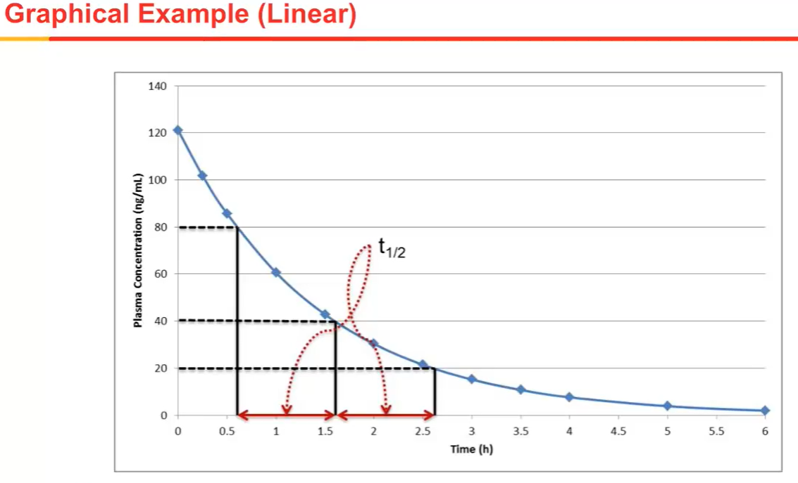

2 Noncompartmental Data Analysis (105-OD)
Noncompartmental analysis (NCA) is a fundamental tool used
to analyze pharmacokinetic or drug concentration time data
to understand better how the body handles the drug
In this course you will learn
how to calculate parameters associated with non-compartmental analysis
What those parameters mean
what their impact is and how to interpret changes in the parameters
We will examine all the equations and methodologies that are employed in NCA
Topics to cover:
Observed parameters
Half-life
Area Under the Curve AUC
Clearance
Statistical moments
Data presentation
Bioequivalnece
Study design consideration
Limitations of NCA
2.1 Observed parameters
Here, we will explore concentration data and see how to obtain some of the parameters directly from the observed data.
It is important to note that NCA is not based on a model but is based on observed data and therefore some of the parameters are directly obtained from observations.
2.1.1 Concentration:
amount of substance per unit volume
Units ng/mL, ug/mL, pg/mL, umol/L, nmol/L
Terms used in concentration data in PK: LOQ, LLOQ, LOD, ULOQ or ULQ, Preision, Accuracy
LOQ criteria: LOQ should be <3% (five half lives) of expected peak concentration. Highest conc will be Cmax and lowest will be 3% of Cmax.
Cmax: the maximum value observed in a set of data.
Tmax: The time of Cmax is the time axis was observed
Tlag: A lag time is the time of the last sample prior to the first sample with a measurable concentration. In IV administration there is no lag time observed because we are dosing directly into the vein. Lag times occur only with extra vascular administration. For example let’s imagine that we administer a drug in the form of a tablet after the tablet is swallowed it must dissolve in the stomach and then the dissolved drug must make its way to the small intestine to cross a membrane to reach the bloodstream
Ctrough: The trough concentration or Ctrough is the concentration measured at the end of a dose interval at steady state here you can see that the troughs occur at about 8 hours and 20 hours. These samples were collected just prior to administering the next dose therefore in this data set the Ctrough values are the concentrations measured at 8 and 20 hours which both appear to be about 10 ng/mL.
Cmin: a minimum concentration is the lowest concentration within a single dosing interval. it may be equal to the trough value but it may differ this example shows the case where a difference between the Cmin and Ctrough:
The dose was administered at 8 hours and you can see that the Ctough value is approximately 10 nanograms per milliliter but because there is a lag time in the absorption, the drug concentrations continue to fall after dosing at 9 hours. The concentration is fallen slightly to about 8 nanograms per milliliter after which the absorption process causes the concentration to increase therefore the minimum concentration is approximately 8 nanograms per milliliter but the trough concentration is 10 nanograms per milliliter. This is a very unique situation, it does not normally occur. Generally the minimum and trough concentrations are the same.
2.1.2 Sampling Scheme
the following have significant effect on the observed parameters:
- the times we choose to draw blood
- the frequency of those blood draws
- the scheduling of other events such as dosing relative to those blood draws
how the Cmax is affected by time point selection. The two graphs seen here contain the exact same time concentration data The only difference is in the blood sampling times. in the curve on the left we have more frequent sampling around the peak we have samples at 1 hour 1.5 hours 2 hours 3 hours and 4 hours this results in a c max of 12 nanograms per milliliter at a time of 2 hours The CMax
You can’t take blood samples at an infinite number of times invariably there’s going to be a space between two blood samples and the concentration will peak in the interval during which no blood is taken you want to ensure that you have frequent sampling around the expected time of c max to maximize your chance of observing near the peak concentration
everything we discussed regarding c max also applies to T-Max because T-Max is defined as the time at which we observe c max
the Tlag is different in the two plots on the left t lag is at 1.5 hours and on the right it is at 1 hour you need to have sufficient sampling just after dosing to be able to determine if there is a lag time however lag time doesn’t occur for every drug and a very short lag time such as 10 to 15 minutes may not be relevant therefore you should select time points that will enable you to determine if there is a lag time on the time scale that is relevant for your drug Ttrough values are not really affected by the blood sample schedule as long as a sample is taken just prior to dose administration
The trough value is by definition the concentration just before the dose is administered usually it is appropriate to dose within 15 to 30 minutes of taking a trough sample if you wait much longer than 30 minutes you may not get a true trough however trying to dose too soon after collecting a trough sample may not be practical and it may lead to a cumbersome study design The minimum concentration can also be affected by the sampling schedule this can happen when there is a time lag in the absorption process if you collect a sample after dosing but within the time lag you may see a decrease in concentration after dosing
these plots illustrate this phenomenon on the left the doses administered at 8 hours with sample collection at 1 hour intervals because of the time lag the concentration continues to decrease and at 1 hour post dose we collect a sample with a lower concentration than the previous sample at the dose time if we do not collect a sample within 1 hour after dosing we will not observe the decrease in concentration process causes the concentration time at 8 hours keep in mind that understanding lag time from your single dose data will help you design a proper sampling scheme for your minimum concentration samples. In conclusion remember that because you’re observed parameters are taken directly from concentration time data nearly all of these parameters are dependent on the sampling scheme intensive sampling provides more accurate estimates for observed parameters
2.2 Half-life (t1/2)
The time required for the observed concentration usually in plasma to decrease by 50%.
let’s take a look at half-life graphically. here we have a plot of the plasma concentration on the y-axis and time on the x-axis both axes are on a linear scale. in this plot on the figure we have indicated the concentration of 80 nanograms per milliliter with a dashed line it takes one half life for the concentration to drop to 40 nanograms per milliliter and then a second half life for to drop to 20 nanograms per milliliter

The half-life in this case is approximately 1 hour no matter where we start on the curve approximately an hour later the concentration will be cut in half here is the same data plotted on a semi logarithmic plot with the plasma concentration on a log scale. notice that on this scale it becomes a linear relationship which makes it very easy to determine the half-life here you see the same concentrations that we saw on the linear scale per milliliter. The time elapsed in each of these intervals. How do we determine the half-life in pharmacokinetics. First we assume there is a first order elimination during the terminal phase another words the change in concentration with respect to time can be represented by single term.
This how half-life in the elimination rate are related to one another if you have the elimination rate constant you can get the half-life and the inverse is also true if you have the half-life you can get the elimination rate constant
we are making an important assumption that we have first order elimination during the terminal phase generally this is a reasonable assumption But if you have not reached the terminal phase you are estimating a half-life this relationship may not hold The half-life can affect plasma concentration curb significantly Shorter the half life faster the drug is eliminated Concentration time profiles we can see here that the initial portion of this profile has one slope and then the terminal phase has a separate slope phasic because there are two different processes that are occurring resulting in two different slopes eliminated
After one half life 50% drag its eliminated after two half-life 75% drug eliminated and after three half-life 88% druggies eliminated Is considered normally after 5 and 7 half-lives considered complete elimination Half-life can be used to estimate washout time needed
Half-life is the time required for a 50% reduction in the concentration of drug in the body
Half-life is related to elimination rate constant for first order elimination only
Half-life can be estimated from concentration time profiles
Complete eliminatino (>95%) requires 5 half-lives
May not be a good estimate of the true concentration peak
2.2.1 General Guidance
when calculating half-life, plasma data is most often used however blood, urine or serum data can also be used to calculate terminal half-life values.
We will concentrate on plasma data in this lecture and we will consider urine data in the next lecture
even when we observe multiple phases in the time concentration curve we only calculate the terminal or last half-life when doing non-compartmental analysis
we also assume first order elimination during the terminal elimination phase
Phase should be considered and we need to transform that data by taking the log of the concentration second a minimum of three data points is required points should be
- All concentration data in the terminal phase should be used (log-transformed)
- A minimum of 3 data points is required
- The last measurable concentration should be used unless it is greater than the previous concentration measurement
- The maximum observed concentration Cmax should not be used
- Values below BLQ should not be used
Example:
First plot the concentration time data on a semi-log scale and visually identify the terminal phase then perform a linear regression in the last three time points on your semilog plot. The slope is equal to the negative of the elimination rate constant. The intercept is not needed. r2 is the goodness of fit and values closer to 1 are better. finally we can use the equation of rate constant
we will plot the data using a log scale for the y axis as you see here. In this plot we need to identify the points that we will use to calculate the terminal elimination rate it looks like the terminal phase encompasses all but the first two data points which might be a different phase but generally it looks like a straight line from about 2 hours through 18 hours post dose In this first example we will simply use the last three points
Regression we get a slope of negative 0.0949 and an r squared value of 0.930 which means that the line can explain 93% of the variability of the y-axis values. Remember that the elimination rate constant is the negative of the slope and therefore the rate constant is 0.949 hours to the -1 and then using the equation we saw previously we can calculate the half-life which turns out to be 7.3 hours. After second half life it approximately 15 hours the concentration should only be 25% of its original value And now on the log scale we can see that there appear to be two phases first a distribution phase for about the first 3 hours followed by an elimination phase from about 4 hours to 24 hours we will focus on the terminal portion and we will not use any points from the earlier distribution phase.
Although there may be as many as 6 points available in the terminal phase in this example we will just use the last three points for deciding on the optimal number of points to use in the fit but for now we’re just going to use the last 3 points again we determine the slope by linear regression and get a slope of negative 0.07551 the r squared value is 999 indicating a high degree of correlation and explaining the variability we can determine the elimination rate constant and from that calculate the half-life which is 9.40 oral administration here you can see that the drug concentration increases over time
Terminal elimination phase which appears to be between about two and eight hours. again we will use just the last three points although it does appear that there are more points we could consider using linear regression using the last 3 points allows us to determine the slope of negative 749 with an r squared value of 0.990 therefore the terminal elimination rate constant is 0.749 hours to the -1 and the half-life is 93 hours this is a very short half-life but it does appear to be correct because the concentration decreases from about 150 in about an hour
2.2.2 Number of data points to use
In all of our examples we use just three points but perhaps we should select four or five or even more data points to get a better terminal elimination rate constant estimate. We will use:
an iterative process where you start with the fewest number of data points to the maximum number of data points allowed up to but not including Cmax.
We make pairwise comparisons and select for the largest value of r2 or adjusted r2 . The r2 is the correlation coefficient from a linear regression and it shows how much variability is explained by the linear regression. An adjusted r2 gives a small penalty for adding data points, r2 tends to increase as you add data points so this penalty offsets that natural increase.
The equation for adjusted r2 is shown here where r squared is the correlation coefficient and n is the number of data points used in the linear fit. The adjusted r2 will always be slightly smaller than the r2 value although the difference gets smaller as more points are used.
The minimum acceptable value of r squared or adjusted r squared is 0.60. some companies have SOPs where they require even larger r squared values but generally 0.6 is an appropriate limit. Below this value you can’t have high confidence in your estimate of the terminal elimination rate constant
In conclusion here are a few things you should remember from this lecture
- the terminal half life is calculated from the elimination rate constant and the elimination rate constant can be estimated from concentration time data
- You can follow the basic guidelines we presented using linear regression of semi-logarithmic data
- you want to use as much data as possible while maintaining the best correlation which is why we use the adjusted r squared to determine the number of points to use
- one last note about the slope fit ideally you would like to be able to use two to three half-lives of data in the terminal phase to get a reliable estimate of the terminal slope in the terminal phase you will still be able to calculate a slope but the reliability of your estimate will decrease
2.2.3 Half-life of Urine data
When determining half-life from urine data:
As in plasma only the terminal or last half-life is calculated
As in plasma we assume first order elimination during the terminal phase
What is different about your data is that we determine the renal elimination rate which we assume to be proportional to plasma concentration. That assumption is usually true although in rare cases you may get an inaccurate result if it is not proportional.
let’s consider the equations involved in renal elimination on the left we can describe the renal elimination rate in terms of the renal clearance and the plasma concentrations. One important difference between plasma and urine data is that plasma concentrations are determined at discreet points in time but urine data is collected over a time interval.
We can determine the renal elimination rate during the collection interval using the equation on the right where Vur is the volume of urine Cur is the concentration of the drug in the urine and delta t is the change in time.
the method that we will use is as follows
- first we calculate the renal elimination rate for each urine collection interval using the equation.
- we plot the renal elimination rate versus the midpoint of the collection interval on a semi-logarithmic scale
- we perform linear regression to determine the slope r squared and the half-life and as with plasma data we don’t need the intercept.
let’s take a look at an example of the renal elimination rate on this plot the y-axis is the renal elimination rate and milligrams per hour and the x-axis is the midpoint of the collection interval
notice that the intervals are about 2 hours apart at the beginning and then as long as 12 hours apart at the later times as with plasma data the semi-log plot is more useful let’s take a look at that one
here to help us visualize the data we have plotted the intervals as a series of steps and the midpoint of each interval is plotted with a diamond symbol The y-axis again is the renal elimination rate but now it is on a log scale if we perform a linear regression using the last three points we get a slope of minus 0.146 and an r squared value of 0.999 the rate constant for renal elimination is then the negative of the slope or 0.146 hours 1 and from that we calculate a half-life before 7 hours The linear regression for urine data is done the same way as with plasma data but the difference is that we plotted the renal elimination rate in the concentration on the and on the x-axis we plot the midpoint of the interval.
The rate constantly determine is the average renal elimination rate One question you might be asking is what else can we determine using the urine data Just as in plasma data we can estimate to wash out time which is given by the formula shown here wherein is the number of half-lives
same as plasma data issued expect 95% elimination within five have lives Finally remember that the half-life only predicts the time to steady state but it does not predict the plasma concentrations or the renal elimination rates that will be observed there are ways of predicting concentrations at steady state but those concentrations also depend on the dose amount in the interval of dosing
In conclusion the two major points of this lecture have been that
- the terminal half-life can be estimated from urine data using the renal elimination rate
- half-life is primarily useful for estimating washout time and the time to achieve steady state this concludes the topic of half-life next let’s take a moment to review what you’ve learned about half-life in these three lectures and in the corresponding exercise
2.3 Area Under the Curve or AUC
Area under the curve or AUC is the total exposure to drug over time and can be calculated as the integral of all concentrations across all time points.
Mathematically it is expressed as shown in the equation. The AUC from 0 to infinity is the integral from time zero to infinity of the concentration time curve multiplied by dT which is the change in time.
AUC can be calculated directly from concentration time profiles using simple algebra based on addition and multiplication. AUC can be calculated for any time interval for which concentrations are measurable those are called partial areas and we will talk about those a little bit later.
Here’s an example of the area under the curve we have a set of plasma concentration time data shown here from time zero peeking about 1 hour post dose and then declining down to 6 hours post dose
The area under the curve is literally the area under that plasma concentration time curve as indicated here once the AUC has been calculated that number can be used to make comparisons in drug exposure. Next we are going to go through some mathematical derivations and we will end up with some equations that you can use to calculate the AUC. You don’t need to know the details of this derivation to calculate in AUC equations that result from it. But rather than just give you the end equations we will show you how they are derived. The first equation shows that the full AUC from 0 to infinity can be defined by two parts the AUC from 0 to t and the AUC from t to infinity or t is the time of the last measurable concentration. You can see here that AUC is additive so you can slice it up into pieces and add them back together to get the hole
The second equation
So you can slice it up into pieces and add them back together again to get the hole. The second equation shows that the AUC from 0 to T2 is the AUC from 0 to 1 + the AUC from t1 to T2 where t1 is a point somewhere between 0 and T2. You can divide your au season to pieces that are small as you want as long as you have. David to support that mathematically the AUC from time zero to time in is the integral from time zero to time n of the concentration as a function of time multiplied by DT which is the increment of time slices
You should also mention that the concentration at times 0 is a special case for oral administration. the initial concentration is assumed to be zero and for IV bolus administration the initial concentration is back extrapolated to zero time using the log linear fit. here is a visual illustration of this process using the example data set we calculate the area of each slice from data point to data point and then add them together to get the total AUC.
Notice that this gives us the area from time zero up to our last observed concentration which occurs at 6 hours in this data set. in a later lecture we will see how to extrapolate to account for the AUC from the last observation to infinite time.
summary
to calculate the AUC you determine the area of individual trapezoids using the adjacent concentration and time points and then you add the areas together to get the total AUC up to the last observation
how do you calculate the area of a trapezoid it just takes some There are two methods to interpolate between concentration for the calculation of area. The linear interpolation method and the log linear interpolation method. The linear interpolation method assumes that the intermediate values between two observed data points lie along a straight line. The log linear interpolation method assumes that there is a log relationship on the y-ax. This makes sense for decreasing concentration because we know that concentrations do not fall in the linear fashion but they do appear linear when viewed on the lag scale.
You’re a true options that are commonly used
The first is called linear up logged down when concentrations are increasing we use linear interpolation and when they are decreasing we use log linear interpolation
The second method uses linear interpolation only this is typically used in generic drug analysis ensuring all the data has been processed identically therefore the choice of method may be dictated by regulatory agencies and/or company policies so make sure you use an appropriate choice here are the equations that you will use to calculate AUC’s using the two methods.
2.3.1 Extrapolation to infinity
So far we have only determined AUC up to the time of the last observation now we will consider how to extrapolate to determine the AUC from 0 to infinity
We have seen how to obtain the AUC from 0 to 6 hours using the trapezoid method, however we have left out an important part of the AUC calculation. When we stopped collecting data at 6 hours there was still a measurable concentration and therefore there is a contribution to AUC from 6 hours onward that we need food in our calculations
remember that AUCs are additive so that we can subdivide the AUC calculation into different parts The full AUC from 0 to infinity is equal to the AUC from 0 to time t plus the AUC from time t to infinity or t is the time of the last measurable concentration also remember that we can subdivide an AUC as desired the AUC from 0 to T2 can be subdivided as the AUC from 0 to t1 plus the AUC from t1 to T2 where t1 is between 0 and T2 we have used this principle to subdivide the AUC into separate slices from 0 to the last observation as you see here in the yellow trapezoids The piece that we still need to determine is the red triangle which represents the AUC from 6 hours to infinity
so all we need is an equation that will enable us to calculate the AUC from the last observation to infinity and by adding it to the AUC we obtained from the trapezoidal slices we can get the total AUC let’s see how we can drive an equation to calculate the AUC of that triangle consider the decline of concentration from the time of our last concentration measurement to infinity it is important to note that we are assuming that at t last absorption is complete and elimination is following first order kinetics The AUC from t last to infinity is represented by the integral from t last to infinity of c last important to know that in this equation the value of t will not be the time post dose but it is the time elapsed after t last therefore in this equation t ranges from 0 to infinity The integrated form of this equation is shown here to the power of
The term with zero drops out and therefore this big equation simplifies to see last divided by the elimination rate constant so now we have an equation we can use to determine the AUC of the extrapolation from t last to infinity as represented by the red triangle it is simply the concentration of the last observation c last divided by the elimination rate constant k e l all you will need to remember is this last equation The derivation is good to know because you can see what assumptions went into it mainly that absorption is complete and elimination kinetics are first order but the equation here is the only thing you need to know so to summarize to extrapolate to infinity all you need to know is the last observed concentration c at t last and the elimination rate constant k e l and you can determine the AUC from t last to infinity by doing a simple division
finally let us consider the confidence that we can place in our extrapolation we assess this by calculating the ratio of the extrapolated AUC to the total AUC if this ratio is less than 0.15 or 15% then the sampling interval from 0 to t covers at least 85% of the exposure and we can have good confidence in the extrapolation conversely if the ratio is greater than therefore the extrapolated AUC is more than 30% of the total then the sampling interval is probably not sufficient to estimate the total exposure now if the extrapolation percentages adequately will depend on the goals of the study and different criteria may be chosen depending on the application
in conclusion we have seen how we can calculate the extrapolated AUC using the elimination rate constant and the last observed concentration the total AUC is simply the sum of the AUC up to the last observation we also saw that extrapolated AUC values that are greater than 30% of the total AUC are probably unreliable but with less than 15% extrapolation would be considered good anything between 15 and 30% may or may not be considered adequate depending on the application this concludes the second lecture
2.3.2 AUC to make decision
In the third lecture on AUC we will see how to make decisions based on comparisons of drug exposure
The first thing that we should remember is that AUC is a measure of exposure to drug over time therefore AUC’s are used to make comparisons of formulations or to compare exposure under different conditions here are some applications that make use of AUC comparisons
- two different formulations of a drug
- the effects of food on drug absorption
- drug drug interactions
- the effect of demographics on the PK of a drug
2.3.2.1 Bioavailability
bioavailability is defined as the fraction of administered drug that reaches systemic circulation. The bioavailability of a drug is the result of many processes. Let’s consider what happens when a drug is admistered and it moves down the digestive tract a fraction of the drug is absorbed in the small intestine and travels through the portal vein to the liver. The remainder of the drug that is not absorbed continues through the digestive tract and is eliminated in the feces, in the liver the drug is subjected to what is called first past metabolism in which the drug is chemically modified removing some of the drug before it reaches systemic circulation.
The portion of the drug that has not been metabolized enters the bloodstream.
once the drug has reached systemic circulation in the bloodstream it can then be eliminated by excretion through the kidneys and or further metabolism in the liver some drugs are eliminated via other organs that are not pictured here such as the lungs liver and/or other organs is what is responsible for the decline in the plasma concentration over time therefore the bioavailability is a single fraction that describes the many complex phenomena that lead to the drug reaching systemic circulation.
It has a possible range from 0 to 1 where a value of zero would mean that none of the administered systemic circulation and a value of one would mean that 100% of the dose reaches systemic circulation in contrast to oral administration when we administer a drug by IV either as a bolus or as an infusion 100% of the drug is introduced directly into systemic circulation and therefore the bioavailability is exactly one now that we have defined bioavailability
2.3.2.2 Relation between AUC, Clearance and dose
How bioavailabity is related to the AUC, dose and clearance. AUC is a function of bioavailability, dose and clearance:
\[AUC = \frac{F*Dose}{CL}\]
let’s consider how we can use this equation to compare drug exposure
if both dose and clearance are constant then dose is proportional to the bioavailability which is represented by F \(AUC \propto F\)
if F and clearance are constant then AUC will be proportional to dose \(AUC \propto Dose\)
and finally if dose and bioavailability or constant then AUC is inversely proportional to clearance \(AUC \propto \frac{1}{CL}\)
2.3.2.3 Determinatino of Bioavailability
The equations for bioavailablity for both oral and IV administration is given above.
if we divide these two equations by each other and do some algebra to solve for F we get the relationship shown here where F is equal to the AUC for oral administration times the IV dose divided by the AUCIV times the oral dose usually we can assume that the clearance following oral administration will be the same as the clearance following IV administration and therefore the clearance terms drop out.
Example:
We administer the drug to the same subject by both IV and PO and then measure the plasma concentration over time we can use different doses for IV and PO but in this case we had doses of 5 mg per kilogram for both. We obtained the AUC values and then calculate the bioavailability. In the case shown in the plots here the AUC following oral administration was 47,000 and the AUC following IV administration was 133,000 both doses were five therefore the bioavailability for the subject was determined to be 0.352. The bioavailability can be determined for all subjects in the same way when comparing AUCs
A few things to remember when comparing ACUs:
- Crossover studies have lower variability because the same individual receives both treatments.
- The ratios of AUC are useful in drug studies. These are normally expressed as the AUC of the test divided by that of the reference. They are sometimes expressed as a percentage
- AUC is log-normally distributed. Log transform should be used before doing statistical tests and geometric mean is a better measure than arithmetic mean
Here are some examples used to establish whether
two formulations are equivalent in the rate and extent of the drug reaching the site of action In that case we compare the ratios of the AUCs of the two formulations and a similar comparison is done with the c max values
for a food effect study you might compare the AUC of the Fed arm to the AUC of the fasted arm for drug interactions you might compare the AUC for the drug plus the inhibitor to the AUC of the drug alone and for hepatic impairment you would compare the AUC with impairment to the AUC of subjects with normal hepatic function in each of these cases the denominator contains the reference The reference is the standard to which you are comparing the test notice that the test is in the numerator in each of these in bile equivalents the test is the test formulation in food effect the test is the fed state in drug interaction the test is the drug combination and in hepatic impairment the test is the impaired individuals
2.3.3 how to interpret changes in AUC
remember that AUC is directly proportional to bioavailability and inversely proportional to clearance
if a u c increases either bioavailability has increased or clearance has decreased
if AUC decreases then we have the reverse situation either bioavailability is decreased or clearance has increased
so what constitutes a significant change? In AUC changes less than 20% are not considered clinically significant but changes greater than 50% are considered clinically significant in most situations.
2.3.3.1 AUC and Dose
Change in AUC should also be proportional to dose if clearance is constant that means that doubling the dose should double the AUC. You can test for proportionality using an exponential model:
\[ AUC = \alpha*Dose^\beta \]
if the confidence interval for beta includes 1, then dose proportionality can be concluded.
Summary
- we have seen how AUC comparison should use ratios. We considered examples of bioequivalence food effects hepatic impairment and drug interactions
- We can determine bioavailability by comparing AUC for extra vascular and IV administration and third
- AUC can also be used to evaluate dose proportionality using the power model
2.4 Clearance
Clearance is how quickly the body removes drug from the bloodstream. It is also a proportionality factor between the plasma concentration and the rate of elimination. We can see in the equation that the rate of elimination is equal to the clearance times the concentration of drug is a function of time. It is expressed in units of volume divided by time (example, liters per hour).
\[Rate\, of\, Elimination =CL * C(t)\] In most cases clearance is constant even though the concentration and rate both change over time. Clearance includes both metabolism and elimination.
Metabolism is the conversion of drug from one chemical species to another.
Elimination or removal from the body through one of several organs that eliminates the compound through the body.
2.4.1 Calculating CL
The rate of elimination is the change in amount (dA) divided by the change in time. From the definition of CL, the clearance is a proportionality factor between the concentration and rate of elimination.
\[ \int_0^{\infty}dA = CL * \int_0^{\infty} C(t) *dt \]
\[ F * Dose = CL * AUC \] The final equation to calculate CL:
\[ \frac{CL}{F} = \frac{Dose}{AUC} \]
2.4.2 Clearance vs Apparent Clearance
Clearance can only be determined following an IV dose where F = 1 or if F is known from a previous IV dose.
Apparent clearance (CL/F) is the clearance adjusted for the bioavailability
The CL/F can be determined for any route of administration but is specific to that route of administration.
The CL/F cannot be extrapolated to other routes of administration or even across species. For example, because the bioavailability for oral administration will be different than the bioavailability for subcutaneous administration each route of administration will result in different CL/F.
2.4.3 Clearance is additive
- Clearance is an organ specific effect and individual organ clearances can be some together to provide overall drug clearance, as you can see in the equation
\[ CL_{total} = CL_{hepatic} + CL_{renal} + CL_{others} \]
- The total body clearance is equal to the sum of clearance of the liver or hepatic clearance plus renal clearance plus other organ clearance. You can add those together to get the total clearance of the drug from the body making it very easy to work with clearances
2.4.4 Calculating renal clearance
Although it is not easy to calculate organ specific clearances, the renal clearance is much easier to determine.
We can determine the exact amount of drug that comes out in the urine and thus how much drug was eliminated by the kidneys.
The total amount of drug excreted in urine (Ae) can be determined by collecting urine for a long enough period of time and measuring the concentration of urine and those intervals then multiplying the concentration times the volume to get that amount.
Divide the amount excreted, Ae, in the urine by the AUC in plasma that gives you the renal clearance or that portion of the drug that was cleared by the kidneys. The equation that describes that is shown here \[ CL_r = \frac{Ae}{AUC} \]
2.4.5 Volume of distribution
Another term that we use in assessing the pharmacokinetics of drugs is the volume of distribution.
The volume of distribution is the apparent volume into which the drug is distributed.
It is the proportionality factor between the total drug in the body and the plasma concentration
Expressed by an equation, dose divided by the volume of distribution is equal to the concentration in plasma
\[ C_p = \frac{Dose}{V_d} \]Because we know the dose and we measure the plasma concentration it is a simple matter to calculate the volume of distribution.
Let’s take a look at two examples in both cases we administer a dose of 1 mg which here we express is 1,000 micrograms on the left we determine a plasma concentration of 100 micrograms per liter and on the right the plasma concentration is 10 micrograms per liter solving the equation we get a volume of 10 liters to realize that the volume of distribution is not a real volume on average the human body only has approximately 5 l of whole blood and approximately half of that volume is plasma.
For a drug that is largely unbound, the volume of distribution may be as small as a few liters but when the drug is strongly bound to proteins in the blood the very small plasma concentration results in a volume of distribution as high as thousands of liters.
So even though the volume of distribution is not a real volume, it is a very useful parameter. Although this equation defines the volume of distribution in practice we use a different method to calculate it. We will see in another video.
2.4.6 CL and other parameters
You can use clearance to estimate other parameters, for example:
the elimination rate constant is clearance divided by the volume of distribution
\[ k = \frac{CL}{V_d} \] volume of distribution can be determined by dividing clearance by the elimination rate constant or \(\lambda_z\)
\[ V_z = \frac{CL}{\lambda_z} \]
half-life can be determined from volume and clearance the half-life is the natural log of two times the volume of distribution divided by the clearance this is also equal to the natural log of two divided by the elimination rate constant
\[ t_{1/2} = \frac{ln2 * V_z}{CL} \]
2.4.7 Clearance and Organs
We will consider how drugs are metabolized by the liver and see how metabolism affects the clearance. Here we see a diagram showing how drugs are eliminated via extraction in the kidneys and metabolism in the liver.
Remember that some drugs are eliminated by other organs that are not pictured here such as the lungs. The total clearance is the sum of the individual organ clearances. We have already seen how to calculate the clearance from the dose and the AUC, so it is straight forward to obtain clearance values from the data using non-compartmental analysis however to be able to interpret the clearance values we obtain from NCA, especially cases where we observe changes in clearance under different conditions, we need to look at how these organs extract drug from circulation.
Of all these organs that remove drug from circulation the most complicated is the liver. In this lecture we are going to concentrate on how the liver affects clearance values that we obtain from NCA.
2.4.8 Clearance and Liver
2.4.8.1 Rate of Extraction
we can think about clearance as the ability of an organ to extract drug from circulation.
In the middle of the screen is the picture of a liver. In the left is the artarial side and on the right is the venous side. The blood flow in the liver is given by Q. The rate of drug entry is given by Q times the arterial concentration. The rate that the drug returns to circulation is given by Q times the venous concentration. The rate of extraction is the difference between these two. Factoring out Q gives us the equation shown here where the rate of extraction is Q times the difference in two concentrations. When the drug is extracted by the liver, we see a decrease in concentration. Therefore the larger the concentration difference the greater the rate of extraction.
2.4.8.2 Extraction ratio
\[ E = \frac{Rate\,of\,extraction}{Rate\,of\,drug\,entry} = \frac{Q*(C_{Arterial}-C_{Venous})}{C_{Arterial}} = \frac{C_{Arterrial}-C_{Venous}}{C_{Arterial}} \]
You can also calculate something called an extraction ratio which is the rate of extraction divided by the rate of drug entry. The rate of extraction we can replace with Q times the difference in concentration and the rate of drug entry can be replaced with Q times their arterial concentration. The arterial blood flow Q cancels out therefore the extraction ratio can be determined directly from the two different concentrations as shown here.
2.4.8.3 Clearance and E
Now, clearance is equal to the rate of extraction divided by the arterial concentration.
\[ CL = \frac{Rate \, of \, extraction}{Arterial \, concentration} = \frac{Q*(C_{Arterial}-C_{Venous}}{C_{Arterial}} \]
\[ CL = Q*E \tag{2.1}\]
\[ E = \frac{CL}{Q} \]
we just determined that the rate of extraction is equal to q times the concentration difference so this gives us the first equation here we can substitute the extraction ratio for the concentration terms and therefore the clearance is the blood flow times the extraction ratio
The extraction ratio can take any value from 0 to 1 where 0 represents no extraction and 1 represents complete extraction.
Let’s consider two extremes, as the extraction ratio approaches 1, clearance is equivalent to blood flow and as it approaches zero clearances completely independent of blood flow.
extraction ratio helps us understand where the elimination is occurring. Some drugs are cleared almost entirely by metabolism in the liver other drugs are not metabolized but are largely cleared through other organs such as the kidneys. For a high extraction ratio drug where the extraction ratio is greater than about 7 the organ efficiently removes drug from the body and clearance can be approximated by blood flow. If blood flow changes clearance will change in the same direction so for a high extraction ratio drug if blood flow decreases the clearance will also decrease.
Drugs that have low extraction ratios less than 3 have organs that are not very efficient at removing the drug from the body so the blood keeps passing through and a very small amount of the drug is actually cleared by the organ. Clearance then becomes independent of blood flow regardless of whether blood flow increases or decreases. It simply won’t change the clearance very much. In that case the organ function determines the clearance as opposed to blood flow.
2.4.8.4 Plasma and Blood Clearance
Normally clearance is based on plasma concentration data and this results in a plasma clearance value.
However when you look at organ clearance you should base it on whole blood concentration data. To do that you need to convert it using the ratio of drug concentrations in plasma and blood. The clearance in whole blood is equal to the concentration in plasma divided by the concentration in blood times the plasma clearance. The ratio of the plasma concentration to the concentration in whole blood is called the fraction unbound and it is given by the symbol f u.
\[ CL_{blood} = \frac{C_{plasma}}{C_{blood}}*CL_{plasma} \] \[ f_u = \frac{C_{plasma}}{C_{blood}} \]Intrinsic Clearance
Intrinsic clearance is a measure of the metabolic activity of the liver. It tells you the efficiency of the liver at metabolizing drug. Extraction ratio for the liver is shown below
\[ E_H = \frac{f_u*CL_{int}}{Q_H + f_u * CL_{int}} \]
where EH is equal to the fraction unbound times the intrinsic clearance divided by the blood flow plus the fraction unbound times the intrinsic clearance. We know that the hepatic clearance is equal to the hepatic blood flow times the hepatic extraction ratio.
\[ CL_H = Q_H * E_H \]
So if we put those together blood flow times the ratio fraction unbound times the intrinsic clearance divided by the blood flow plus the fraction unbound times entrance clearance.
\[ CL_H = Q_H * \frac{f_u*CL_{int}}{Q_H + f_u * CL_{int}} \]
There are two conditions that help simplify this equation:
| Condition | Result | Approximation |
|---|---|---|
| \(f_u*CL_{int} >> Q_H\) | \(E_H \rightarrow 1\) | \(CL_H \approx Q_H\) |
| \(f_u * CL_{ing}<<Q_H\) | \(E_H \rightarrow 0\) | \(CL_H \approx f_u*CL{int}\) |
If the fraction unbound times the intrinsic clearance is much greater than the blood flow then the extraction ratio approaches 1 and the total clearance can be approximated by the blood flow to the liver
If The fraction unbound times the intrinsic clearance as much smaller than the blood flow, then the extraction ratio approaches zero and the hepatic clearance is approximately equal to fu times intrensic clearance.
How to interpret changes in clearance?
Decreases in clearance suggest one of two things:
Metabolic inhibition or the method of metabolizing the drug has been inhibited in some way.
organ dysfunction if the organ simply is not working as well as it should you may see decreases in clearance
Increases in clearance suggest metabolic of regulation. For example, if your drug induces a cytochrome P450 that metabolizes your drug you may see changes in clearance over times with repeated dosing as the enzyme upregulates to start metabolizing the drug.
Clearance is derived from both dose and AUC.
keep in mind that comparisons of AUC are more accurate than comparisons of clearance. In theory, it should not make a difference but what we find is that AUC comparisons are more accurate. Because you are not introducing another potential variable dose which may vary slightly from person to person. Not only can the dose very slightly but the bioavailability can change from person to person as well. Remember that AUC is inversely proportional to clearance meaning that as AUC increases clearance decreases and as AUC decreases clearance increases.
2.4.9 Conclusion
the extraction ratio represents the ability of an organ to remove drug from the body which means that if you have high extraction you have efficient removal if you have lower extraction it’s not efficient
plasma and blood clearances are related by the ratio of plasma and blood drug concentrations this gives you a way to convert between plasma and blood clearances
intrinsic clearance is really a measure of the ability of the liver to metabolize drugs
clearance should be evaluated with the area under the curve as we describe previously
2.5 Statistical moments
Statistical moments are quantitative measures of the shape of a set of data points and they are used to describe probability distribution curves.
For example, here we have a probability distribution curve that is a normal distribution and we have a couple of moments or quantitative measures that describe the set of data. The first one is the mean given by the red line and a second moment is the width given by the green line so if you know the mean and the width and a certain place you could reproduce the curves.
These moments here describe the mean and the standard deviation for a normal distribution
2.5.1 Statistical moments and PK
In pharmacokinetics, you can also have statistical moments. a statistical moment in pharmacokinetics is an alternative description of pharmacokinetic data. Normally we plot plasma concentration as a function of time but in this plot the residents time is on the x-axis and the relative frequency is on the y-axis. Therefore, the height is proportional to the number of molecules at a particular residence time.

In this plot, we can see that the distribution is different from the normal distribution. You still have a mean, the mean residence time, indicated with the red line but the distribution is no longer symmetrical. The peak is shifted to the left of the MRT line relative to the normal distribution and there is a long tail. As the residence time increases so a small number of molecules spend a very long time in the body.
2.5.2 Half-life and MRT
Remember that half-life is the time required to eliminate 50% of the drug molecules. Mean residence time is the average amount of time that a single molecule remains in the body. If all molecules enter the body at the same time, for example in an IV bolus dose, then the mean residence time is equal to the sum of the number of molecules (Ni) times the residence time (ti) divided by the number of molecules, so a simple average.
\[ MRT = \frac{\sum (N_i*t_i)}{\sum N_i} \]
That is okay for a definition but we need to come up with an equation that will allow us to determine the MRT using values we can actually measure.
2.5.3 Moment Curves in PK
In PK data, statistical moments of n order are described by the equation given below:
\[ \int_0^\infty t^n*C(t)*dt \]
Zero Moment Curve:
Let’s start with the zero moment curve where n = 0, this is simply the concentration versus time curve that we have been using up to this point in our analyzes and as we have seen previously the interval of the zero moment curve gives us the AUC.
The first moment curve:
When n in the equation takes on a value of 1. The integral of the first moment curve gives us a parameter called the area under the first moment curve or AUMC. It turns out that the AUC and AUMC values we determine in this way are useful for determining the mean residence time as we will see next.
2.5.4 Calculating MRT
we will start with our original equation where the mean residence time is the sum of all the individual residence times divided by the number of individual molecules
let’s find a different way to express the summation in the denominator of the first equation. We can express the summation as an integral. The sum of the individual molecules is the integral from 0 to the dose of change in the amount is a function of time this interval defines the dose. So we can replace the denominator in the first equation with the dose. Now let’s take the second summation and recast it in terms of the integral from 0 to the dose of the individual times multiplied by the increment of the amount at that time. If we substitute these two equations into the first equation we get the fourth equation. Remember that the change in amount divided by the change in time is the clearance times the concentration as a function of time. So putting it all together the mean residence time is the ratio of these two integrals. We can substitute the clearance times the concentration for dA over dT, the clearance will cancel out so it simplifies to this ratio here. The denominator defines the area under the curve and the numerator defines the area under the moment curve for AUMC. Therefore, if we can determine both the AUMC and AUC we will be able to determine the mean residence time.
2.5.5 MRT conditions
The equation that determines MRT is:
\[ MRT = \frac{AUMC}{AUC} \]
the ratio is only valid if you have four specific conditions:
The PK is linear meaning that the clearance is independent of dose
Clearance does not change with time
Drug is eliminated from the central compartment only
Drug is administered into the central compartment as a bolus
All of these conditions have to be met for this equation to be valid
Conclusions
Statistical moments can be used to describe PK curves
The mean residence time is the average time that a single drug molecule resides in the body
MRT can be calculated by dividing the area under the moment curve by the area under the curve. Remember that this is only valid for an IV bolus dose.
2.5.6 Non-IV bolus administration
When the input is not instantaneous, the time for drug input must be considered with statistical moments.
\[ \frac{AUMC}{AUC} = MIT + MRT \]
Because some molecules enter at time zero and some enters minutes or even after hours later. In that case the AUMC divided by the AUC is not equal to the mean residence time, it is equal to the mean input time plus the mean residence time.
\[ MIT = \frac{t_{dur}}{2} \] For an infusion the mean input time is easy to determine when the infusion is delivered at a constant rate. Half way though the infusion half of the dose have been delivered. Therefore the MIT is the duration of infusion divided by 2.
2.5.7 Other administration route
First order input can be approximated using absorption rate constant
let’s consider first order input. The equation we have before is still valid where the ratio of the AUMC to the AUC is equal to the MIT plus the MRT. The mean input time is now different for first order input we can approximate the mean input time is one over the absorption rate constant:
\[ MIT \approx \frac{1}{k_a} \] Combining these two where the MRT can be approximated by the ratio of the AUMC to the AUC minus 1 over the absorption rate constant
\[ MRT \approx \frac{AUMC}{AUC}- \frac{1}{k_a} \]
For oral administration, the MIT is given be equation below:
\[ MIT_{oral}= MDT + MAT \] where, MDT is mean dissolution time and MAT is mean absorption time
MIT for oral administration includes times for dissolution and absorption
2.5.8 Calculating AUMC
Therefore it is even more complicated to determine the mean residence time following oral administration. To calculate the AUMC,
- we have to first generate what is called the first moment curve. We calculate the term called c primed which is the time multiplied by the concentration value at that time.
\[ C' = t_i *C(t_i) \]
- Calculate the AUMC using linear or log-linear trapizoidal rule with the data pair (t, C’). This gives the AUMC from zero to the time of the last observation.
Let’s take a look at any illustration of this in blue we have a concentration versus time plot with c prime plotted in red on the second y ax remember that the c prime is the time multiplied by the concentration at that time let’s just recall how we get the AUC from the concentration by constructing a series of trapezoids from point to point as you see illustrated here remember that these trapezoids allow us to determine the AUC from 0 up to the time
The AUMC is just the area under this first moment curve just as the AUC was the area under the concentration time plot just as with the AUC we can determine the AUMC by a trapezoidal method as you see here in the red trapezoids.
- Extrapolate AUMC from the last observation to infinity
Now that we have the AUMC up to the time of the last observation,the next part is to extrapolate it to infinity using equation below:
\[ AUMC\_{t-\infty} = \frac{C_{last}*t_{last}}{k_{el}} + \frac{C_{last}}{(k_{el})^2} \]
Three variables go into this equation Clast, Tlast, and the elimination rate constant.
2.5.9 Volume of distribution
The steady state volume of distribution can also be calculated using mean residence time. Steady state volume of distribution (Vss) is equal to the clearance times the mean residence time. In other words dose times AUMC over AUC squared. \[ V_{SS} = CL * MRT = \frac{Dose *AUMC}{(AUC)^2} \]
2.5.10 Limitations of MRT
There are some limitations with mean residence time.
MRT calculations are highly influenced by terminal samples. t*C can be large when t is large.
Interpretation of MRT is very complicated when non-IV bolus modes of administration are used.
The mean residence time is not indicative of a duration of effect for most drugs. It is simply a way to describe the amount of time an average molecules spends in the body.
Conclusion, we’ve seen
how mean input time, mean disillusion time and mean absorption time are additional parameters that can be determined.
how to calculate AUMC based on the new data pairs of time and c prime
how the statistical moment parameters can be influenced by data at the terminal phase of the plasma concentration time curve
2.6 Presenting PK results
Information flow:
- Individual observations
- Calculated PK parameter results
- Statistical results of comparisons
- Discussion of results
- Relevant conclusions (that addresses the study objective)
2.6.1 Presenting concentration data
Individual concentration values in listings
Individual concentration-time plots (both linear and semi-logarithomic)
Combined plot of all individual concentration time data
Summary statistics by nominal time points
Example of individual listing:


2.6.2 PK parameters
Individual parameter values in listing
summary statistics by treatment (for small data, include individual parameter values)
Graphical presentation of the parameters are useful

2.6.3 Proper use of descriptive statistics
Discrete variables: Variables that can only take on a certain number of values (eg whole number). Main statistics used are: N, minimum, maximum, median
mean and SD don’t make sense for discrete variables
Tmax and Tlag are discrete variables because they can only take on values of the specific blood draw times.
2.6.3.1 Continues variables
Variables that can take on any value within a range of values. For example, body weight can take on any value it just depends on the precision of the instrument you are using. For a continuous variable that descriptive statistics that you want to use are:
The number of values
The minimum
The maximum
The median
The arithmetic or geometric mean
The standard deviation or the coefficient of variation
2.6.3.2 Normally distributed variables
- the arithmetic mean
- standard deviation
The amount excreted in urine is an example of a normally distributed parameter
2.6.3.3 Log normally distributed variables
the geometric mean
the coefficient of variation
parameter such as Cmax, AUC and Clearance are log normally distributed
2.6.4 Plots for PK parameters
a figure that is a useful way to display PK parameters graphically on the y-axis. We have Cmax on the x-axis, we have two groups a fasted group and then a non-fasted or fed group
The open circles represent individual values and the line connecting the pair of points signifies that it is the same individual so you can compare data from individual subjects.
The solid black circles with error bars represent the geometric least square mean with 95% confidence intervals. so it appears that there is an increase of food effect. this is not a statistical test but it’s just visual representation. The figure allows you to see that most of the lines slope upward from fasted to Fed with the exception of maybe two or three subjects. It looks like that increase in geometric mean may be skewed somewhat by one subject that had a very large Cmax. the plot makes it easier to detect trends in the data because it is very visual let’s take a look at the statistical results
You will want to include the full output of the statistical software in a listing so that all the details of your methodology are included. You will also want to include a well-organized summary table that presents the relevant data clearly and concisely. Finally graphical output can be very helpful so include graphics if it is appropriate for the data.
Let’s take a look at some examples here’s an example of a statistical output for a linear mixed model and it’s from the same study that we’ve been examining in this video.
tailed output but it has all the relevant details about how the analysis was done Readers probably won’t start examining your results here but they may come back to it if questions arise here’s a statistical summary
we have columns for parameters with units. The treatment the number of data points used the geometric lease squares mean for each of the treatments and the 90% confidence interval of that mean further to the right there are some comparisons between the treatments the pair of treatments is identified the ratio between the two treatments the confidence interval and p values are presented. This is a bio equivalence type analysis in the CMax comparison you can see that the ratio of Fed to fastid is 171% and the 90% confidence interval is from 141 to 208%. The p value is less than 0.05 and fasted treatments The AUC comparison show something different. The ratios for both AUC parameters are close to 100% and the 90% confidence interval is wholly contained within the 80 to 125% range are both greater than 05 therefore it appears that there is no significant difference in a UC between the Fed treatments but not.
For example here’s a graphical presentation of dose proportionality.
The individual observations are shown as open circles. The y-axis is the natural log of c max and the x-axis is the natural log of dose. The regression line from the power model is shown and the shaded blue areas represents the 90% confidence limits on that regression presenting it visually packs a lot of information into a single page. So graphical presentation of the relevant statistical information can help your audience understand the data much faster than they would otherwise be able.
Here is another way to present statistical results graphically in a useful format called a forest pot:
this one is actually from a drug label. The top part of this plot shows the changes due to some parameter or co-administered compound. The PK parameters of interest the changes in those values plotted graphically including both mean and the 90% confidence interval and then dosing recommendations notice how for both ethanol and proton pump inhibitors the mean value indicated by a diamond is very close to one therefore there is no change relative to the reference and there is no dose adjustment needed but for sip 3a4 inhibitors like ketoconazole increased close to 1.5 * the reference and the recommendation is to have a maximum dose otherwise the patient might reach toxic levels and the section in the bottom shows the effect of demographics on PK parameters including age gender renal impairment or hepatic impairment so these forest plots are very useful way to communicate statistical results in a way that can be comprehended quickly Communication of scientific messages you want to focus the reader’s attention on clear tables and figures keep your text or minimum and lead the reader from observations to parameters to your discussion and to your conclusions that concludes the video on data presentation
2.7 Bioequivalence
Bioequivalence is defined as the absence of a significant difference in the rate and extent to which the active ingredient becomes available at the site of drug action.
The absence of a significant difference is understood to mean within 20% of the reference drug
the rate and the extent is understood to mean AUC and Cmax. Generally \(AUC_{0-\infty}\) is used but sometimes \(AUC_{0-t}\) can be used.
2.7.1 why, when and how we conduct equivalent study
to assess whether two treatments are equivalent to each other
there are several contexts in which this might be done. The most common is the development of generic drugs in which the aim is to create a generic formulation that is bio-equivalent to an improved treatment. Bio equivalent studies can also be done during drug development to compare new formulations to one’s used in earlier phases of drug development. The same approach can be used for food effects studies and others.
we use a crossover study design in which all subjects receive both treatments and we will compare PK parameters such as Cmax and AUC to evaluate whether the treatments are bio-equivalent.
2.7.2 Cross-over study design
Each subject receives both treatments. We have a test treatment and a reference treatment (T for the test and R for the reference)
subjects are randomly assigned to one of two sequences. Either they get the reference first followed by the test and that is denoted RT or they get the test first and then the reference here denoted TR.
There is a washout period between the two doses, so that the first dose is completely gone before the second dose is administered.
Most common is the two period crossover design in which subjects are either RT/TR but it is also possible to use other crossover design such as three period, RRT/RTR/TRR or four period, RTRT/TRTR crossover. The three and four period crossovers are used for drugs with a high degree of intra-subject variability.
PK parameters that are used to compare the treatments are usually log transformed Cmax, ln(Cmax), \(AUC_{0-\infty}\) and \(AUC_{0-t}\)
lastly we use geometric means instead of arithmetic means. A geometric mean can be obtained one of two equivalent ways. You can multiply all the values and then take the n root where n is the number of subjects. There’s also an equivalent definition that uses natural logs and exponentials and that equation is also shown here.
2.7.3 Example of Bio-equivalent study
Here’s an example from bio-equivalent study with capsule and tablet formulations. In this case the tablet is the test and the capsule is the reference. In the top table these values here are the natural log of the
$AUC$
The values for the tablets are in one column and the values for the capsules are in another. The ratio column has the value for the test divided by the value for the reference on a percent scale. The lower table takes the same approach except in this case the values of the natural log of Cmax.
2.7.3.1 Bio-equivalence in practice
In practice log transformed perameters are evaluated in a mixed effects or two stage linear model.
The 90% confidence interval for the ratio of test to reference (T/R) should be within pre-specified limits.
The pre-specified limits are 80 to 125 on a percent scale unless a wider margin is acceptable based on clinical safety and efficacy data.
2.7.3.2 Bio-equivalence results
Here is a visual example of seven different bio-equivalence tests:
The square data points are the point estimates and the error bars indicate the 90% confidence intervals. Remember that the point estimate is the ratio of the test to the reference on a percent scale. The point estimate and the 90% confidence interval are both returned by the statistical model. The acceptable range is from 80 to 125 and there are dashed lines in both of these points. The ones inside the acceptable ranges are shown in green and the ones that fall outside or shown in red. Remember the entire range must fall within the limits of 80 to 125. If either the lower or upper bound of the confidence interval is not in this range then we cannot conclude bio equivalence. Notice the case in the middle although the point estimate is very close to 100% the confidence interval is very large. So that both the upper and lower bounds are outside the desirable range. Later in this lecture we will consider methods that can be used to assess bio-equivalence with highly variable drugs, such as this
2.7.4 Average Bio-equivalence
we assess the bio-equivalence of the test formulation relative to the reference. This equation describes the statistical basis of the average bio-equivalence:
\[ (\mu_T - \mu_R)^2 \leq \theta_A^2 \] The parameters in the equation are \(\mu_T\) and \(\mu_R\) and \(\theta_A\). Let’s start by defining those terms. \(\mu_T\) is the population average response of the log transformed measure either in AUC or Cmax for the test formulation. u sub r is the corresponding population average response of the logs transformed measure again either AUC or Cmax for the reference formulation sigma a is the equivalence margin which is plus or minus 20%. although a different margin might be used depending on safety and efficacy.
The equation states that the difference squared between the test and the reference must be less than or equal to the equivalence margin squared.
2.7.5 Equivalence Margins
Let’s take a look at the equivalence margins in more details
Equivalence margins are designed to ensure clinical safety and efficacy or allowing for normal variations.
Measures of drug exposure are log normally distributed which is why we do comparisons of the log transformed PK parameters
If we assume difference between test/reference of 20% then the test/reference is 0.8 and this is the lower limit of acceptability
but the upper limit is symmetrical in log normal space. If you take the natural log of 0.8 you get minus 0.223 if you take the positive of that which is 0.223 and you exponentiate it you get 1.25
therefore you get the acceptable range in log normal space of minus 0.223 to + 0.223 that’s symmetrical which is plus or minus 20% but when you back transform it into linear space it moves to 80% on the lower end and 125%. So if you have been wondering where the 80 - 125 comes from, now you know.